← 返回阅读库 · 原论文目录
论文讲解阅读文档 · 论文精读 · v220
ICML'25神作！分隔符优化狂减50%KV缓存：SepLLM
视频时长 00:18:21；讲解文字 6,085 字符；提取讲解画面 115 张。按视频原顺序阅读，每段文字保留时间戳。
文字来自整段视频的自动语音转写，按自然停顿分段，并与 PPT / 论文页面 / 演示画面对齐。未将讲解压缩为摘要；术语、数字和口述公式请结合画面及原论文核对。 阅读稿已校正规范部分明确术语误识别；原始逐字稿和每处修改记录另行保留。
讲解画面为源视频截图（640×360），不是可编辑 PPT 文件。全片按每秒 2 帧扫描内容变化，逐步展开页保留；连续动画保留代表画面。清晰度受源视频限制。
下载完整资料包 · 含离线 HTML、PDF、Word、全部 PPT 画面和字幕。
原论文与材料
SepLLM: Accelerate Large Language Models by Compressing One Segment into One Separator · 下载完整 PDF（21 页）
按时间阅读
00:00:00–00:00:01 · 画面 001
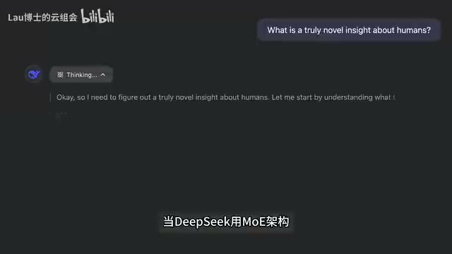
00:00:00–00:00:01 · 画面 001当 DeepSeek 用 MOE 架构突破百万上下文集县当千问大模型掀起平民化部署狂潮，一篇来自中国团队的革命性研究正在改写 LLM 效率规则。这就是今天要重磅解读的 SCP-LLM，用标点符号实现 KV 缓存狂降 50%的黑科技。这篇被 LSTM 之父引用的工作，创造性的发现
00:00:01–00:00:05 · 画面 002
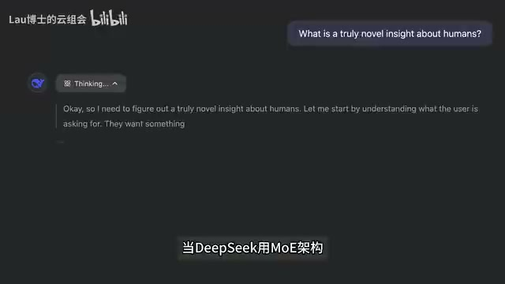
00:00:01–00:00:05 · 画面 00200:00:05–00:00:09 · 画面 003
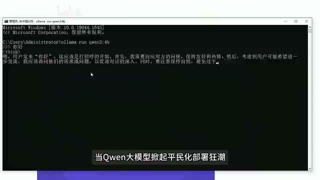
00:00:05–00:00:09 · 画面 00300:00:09–00:00:13 · 画面 004
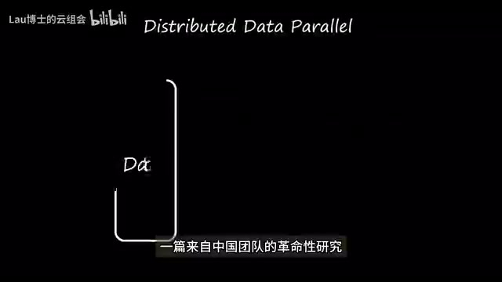
00:00:09–00:00:13 · 画面 00400:00:13–00:00:14 · 画面 005
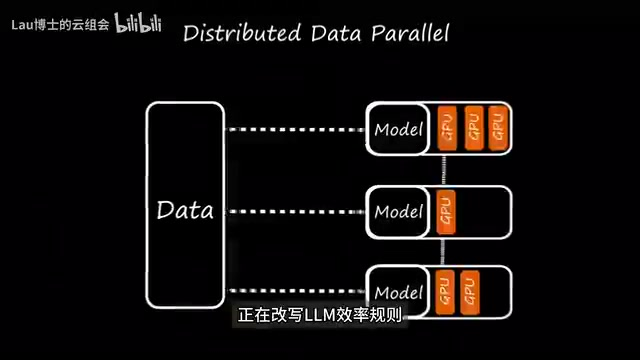
00:00:13–00:00:14 · 画面 00500:00:14–00:00:18 · 画面 006
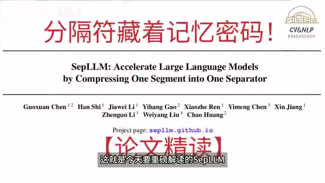
00:00:14–00:00:18 · 画面 00600:00:18–00:00:21 · 画面 007
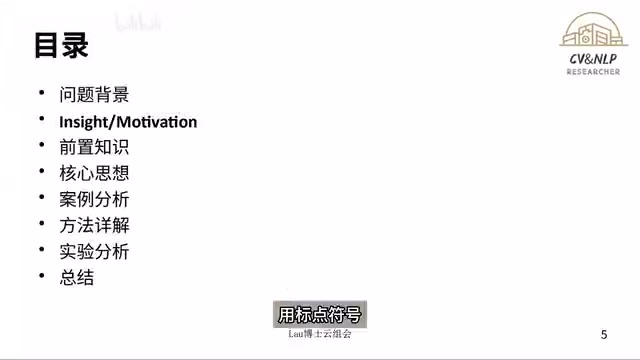
00:00:18–00:00:21 · 画面 00700:00:21–00:00:25 · 画面 008
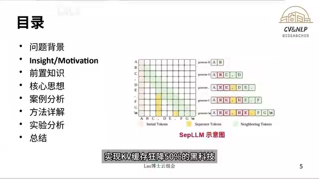
00:00:21–00:00:25 · 画面 00800:00:25–00:00:29 · 画面 009
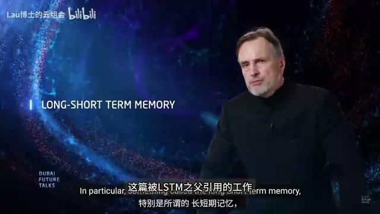
00:00:25–00:00:29 · 画面 009逗号 、句号等分隔符竟藏着文本段落的记忆密码。团队开源竟收获近 400GitHub stars。连 DeepSync 团队也在文章中引用和讨论该方法。只需将文本段压缩进分隔符，就能让 Lama3 在 400 万 Token 的长文本中流畅推理。GSM8K 数学推理性能如水。现在 ，让我们揭开这项 ICML2025 最新的前沿研究
00:00:29–00:00:32 · 画面 010
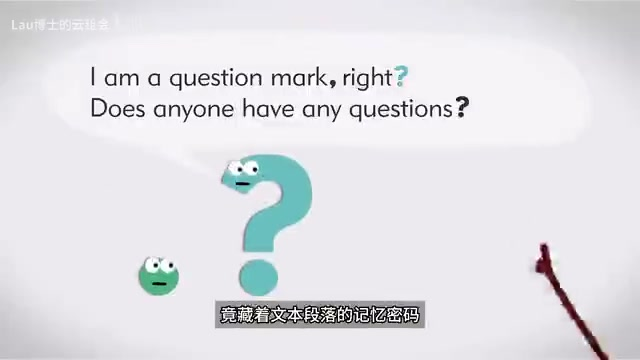
00:00:29–00:00:32 · 画面 01000:00:32–00:00:36 · 画面 011
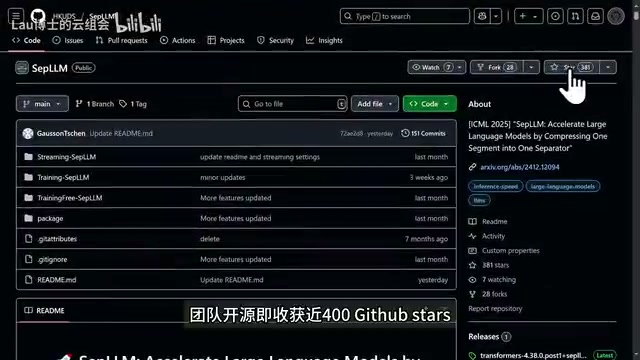
00:00:32–00:00:36 · 画面 01100:00:36–00:00:40 · 画面 012
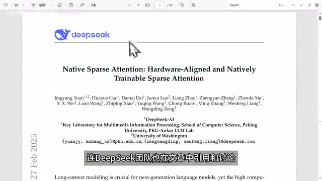
00:00:36–00:00:40 · 画面 01200:00:40–00:00:44 · 画面 013
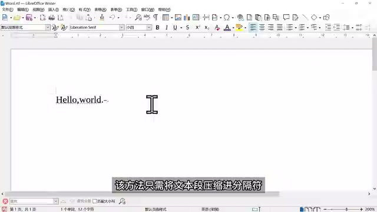
00:00:40–00:00:44 · 画面 01300:00:44–00:00:46 · 画面 014
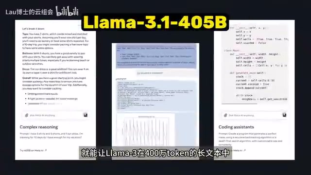
00:00:44–00:00:46 · 画面 01400:00:46–00:00:50 · 画面 015
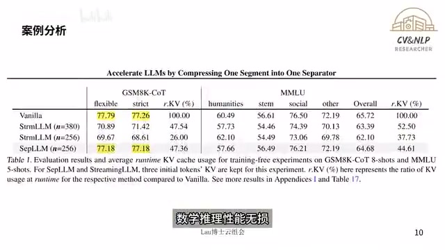
00:00:46–00:00:50 · 画面 01500:00:50–00:00:53 · 画面 016
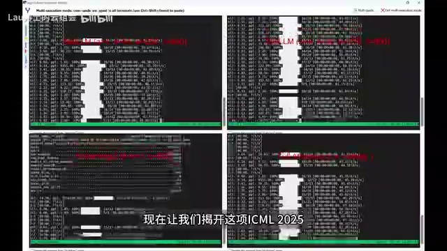
00:00:50–00:00:53 · 画面 016看中国学者如何用一个标点纯一段的颠覆性设计，在 AI 算力的军备竞赛中开辟效率新赛道。欢迎来到力武博士的云组会，我们每周都将至少有一篇高质量的论文精读发布出来。相信在一系列的论文学习以后，你就能成为人工智能领域的专家。同学们，今天我们精读的论文是 SepLLM
00:00:53–00:01:00 · 画面 017
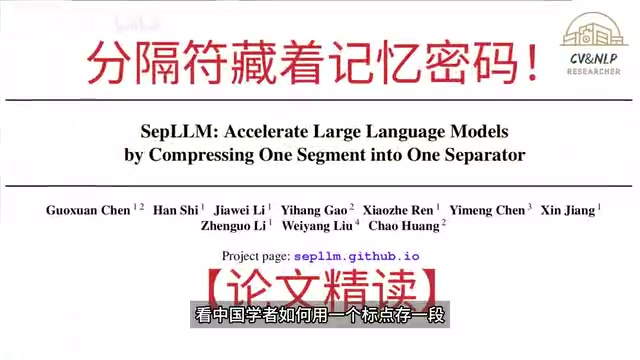
00:00:53–00:01:00 · 画面 01700:01:00–00:01:08 · 画面 018
00:01:00–00:01:08 · 画面 01800:01:08–00:01:09 · 画面 019
00:01:08–00:01:09 · 画面 01900:01:09–00:01:13 · 画面 020
00:01:09–00:01:13 · 画面 02000:01:13–00:01:17 · 画面 021
00:01:13–00:01:17 · 画面 02100:01:17–00:01:19 · 画面 022
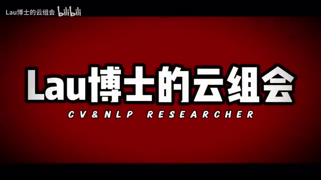
00:01:17–00:01:19 · 画面 02200:01:19–00:01:31 · 画面 023
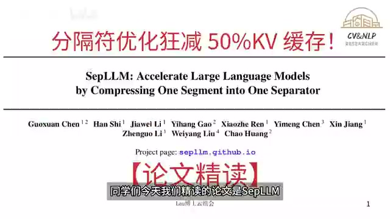
00:01:19–00:01:31 · 画面 023这篇论文提出了一种利用语言当中分格服的 token 加速大眼模型推理的创新框架。这项工作发布不久就已经在 Hugging Face 上面收获了超 2000 次的下载。有需要的同学可以留意 GitHub 上的 Attention 的说明进行部署实践
00:01:31–00:01:32 · 画面 024
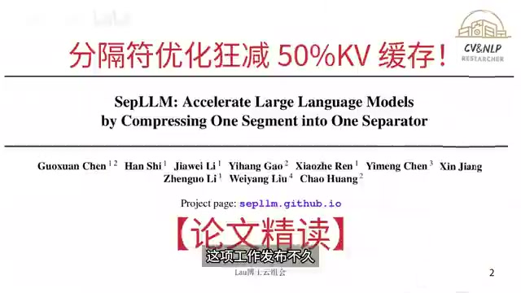
00:01:31–00:01:32 · 画面 02400:01:32–00:01:38 · 画面 025
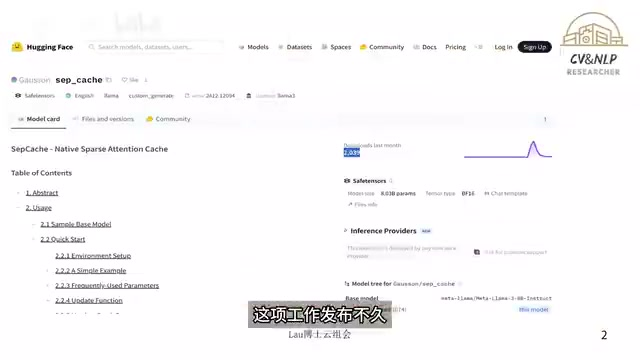
00:01:32–00:01:38 · 画面 02500:01:38–00:01:39 · 画面 026
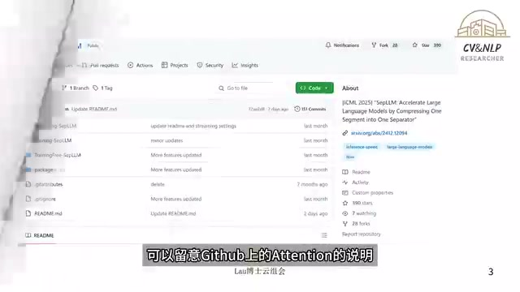
00:01:38–00:01:39 · 画面 02600:01:39–00:01:41 · 画面 027
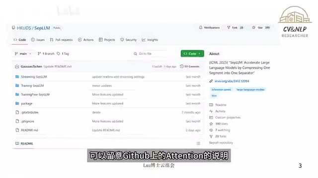
00:01:39–00:01:41 · 画面 02700:01:41–00:01:42 · 画面 028
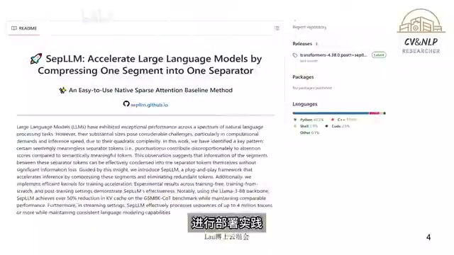
00:01:41–00:01:42 · 画面 028在正式进行方法的讲解之前，我们一起先来看看 SepLLM 想要解决的是一个怎么样的问题。这个问题为什么会成为大模型卡脖子的发展瓶颈呢？大语言模型在处理长文本的时候，你有没有遇到过这样的情况：输入一篇万字的报告以后，模型的加载缓慢，中途卡顿，甚至是提示内存不足。这个问题的根源就藏在了模型的核心计算逻辑当中
00:01:42–00:01:51 · 画面 029
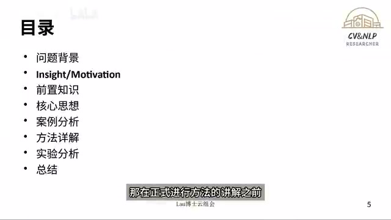
00:01:42–00:01:51 · 画面 02900:01:51–00:01:52 · 画面 030
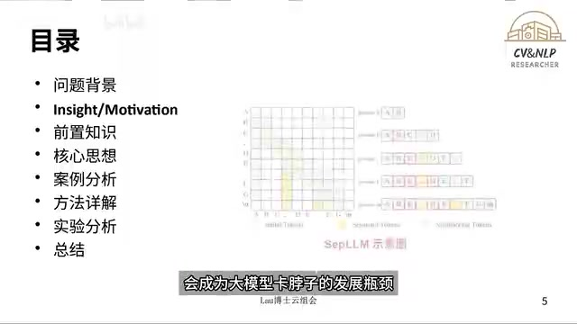
00:01:51–00:01:52 · 画面 03000:01:52–00:01:56 · 画面 031
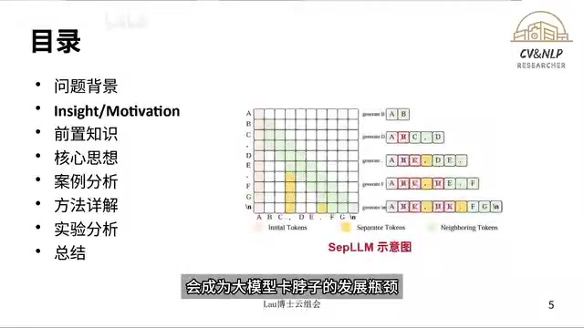
00:01:52–00:01:56 · 画面 03100:01:56–00:01:57 · 画面 032
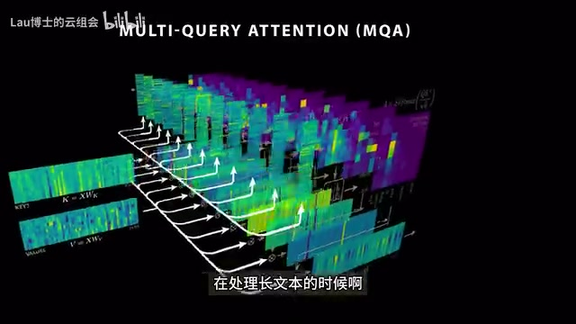
00:01:56–00:01:57 · 画面 03200:01:57–00:02:00 · 画面 033
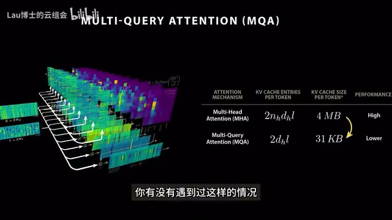
00:01:57–00:02:00 · 画面 03300:02:00–00:02:04 · 画面 034
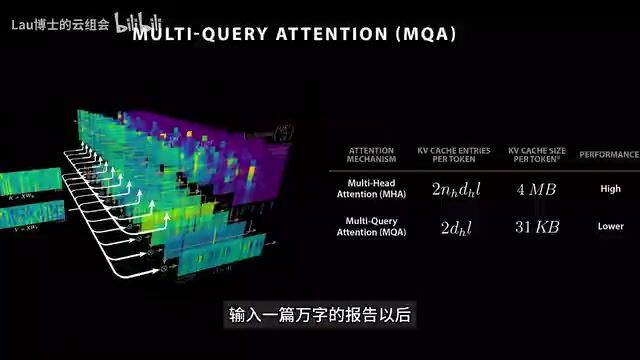
00:02:00–00:02:04 · 画面 03400:02:04–00:02:05 · 画面 035
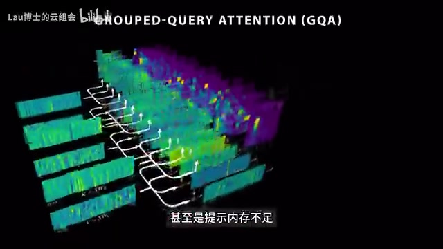
00:02:04–00:02:05 · 画面 03500:02:05–00:02:06 · 画面 036
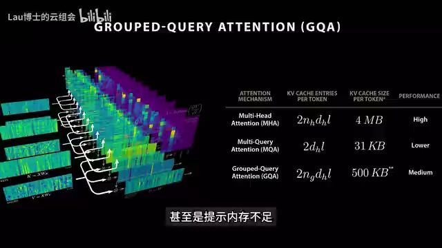
00:02:05–00:02:06 · 画面 03600:02:06–00:02:07 · 画面 037
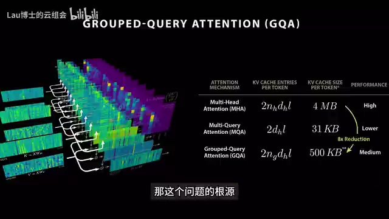
00:02:06–00:02:07 · 画面 03700:02:07–00:02:11 · 画面 038
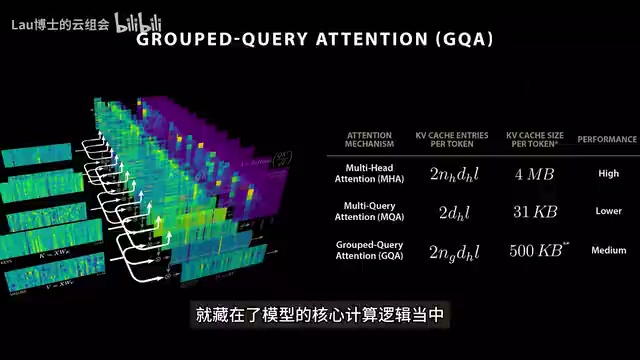
00:02:07–00:02:11 · 画面 038常规的 Transformer 在处理 1 万字我们假设是 2000 个 Token 需要计算 2000 乘以 2000 也就是 400 万次。这还只是单头，假设是 8 头的注意力还会让计算量再乘以 8。这种二次复杂度也就是 ON 的平方，正是长文本处理效率低下的元凶。而这一切都源于 Transformer 的自注意力机制
00:02:11–00:02:13 · 画面 039
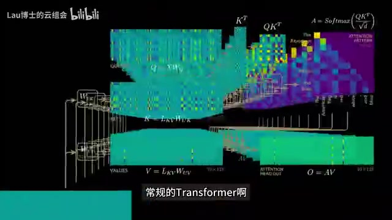
00:02:11–00:02:13 · 画面 03900:02:13–00:02:45 · 画面 040
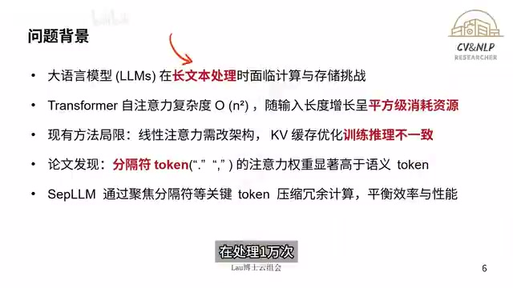
00:02:13–00:02:45 · 画面 040而对于自注意力机制的优化是大模型时代的一个重要研究方向。如果是屏幕前的你会怎么去优化呢？接下来我们就一起来看 SepLLM 是如何利用标点符号浓缩信息，巧妙的对自注意力进行优化，解决上下文过长的问题，减少计算量。论文的第一章就指出在这些海量的 token 的关联当中存在着一种被忽视的规律
00:02:45–00:02:50 · 画面 041
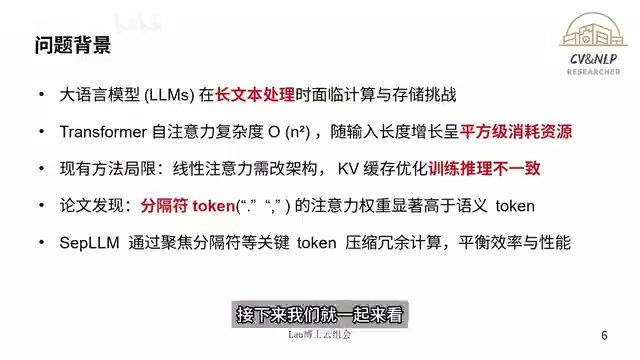
00:02:45–00:02:50 · 画面 04100:02:50–00:02:55 · 画面 042
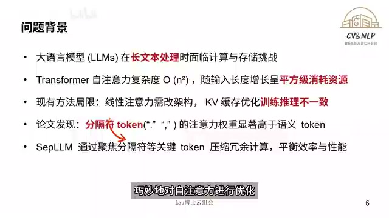
00:02:50–00:02:55 · 画面 04200:02:55–00:02:56 · 画面 043
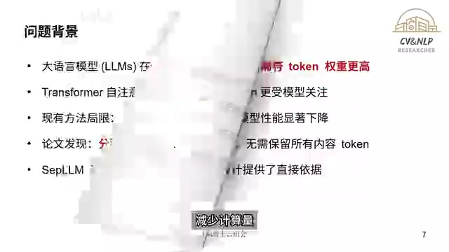
00:02:55–00:02:56 · 画面 04300:02:56–00:03:01 · 画面 044
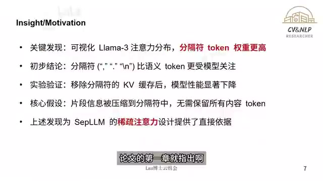
00:02:56–00:03:01 · 画面 044逗号、句号等等的分格服的 Token 和其他 Token 的注意力权重普遍是很高的比如说在处理一段包含多个句子的文本的时候句子对于前后句子的 Token 的权重显著高于两个无关句子当中的 Token
00:03:01–00:03:06 · 画面 045
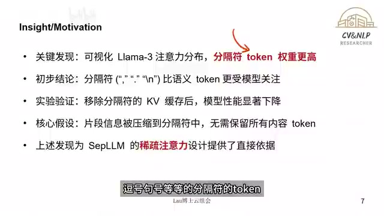
00:03:01–00:03:06 · 画面 04500:03:06–00:03:13 · 画面 046
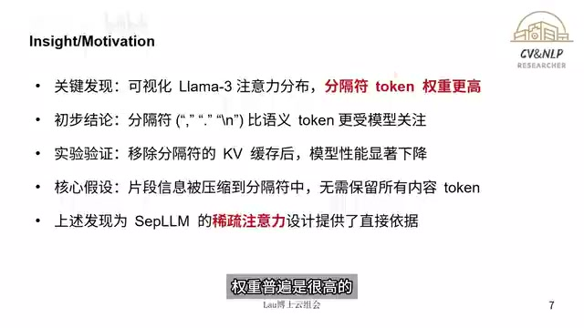
00:03:06–00:03:13 · 画面 04600:03:13–00:03:18 · 画面 047
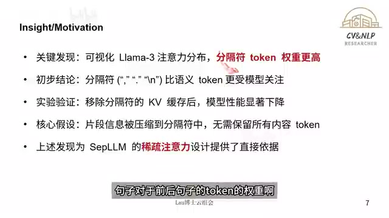
00:03:13–00:03:18 · 画面 04700:03:18–00:03:20 · 画面 048
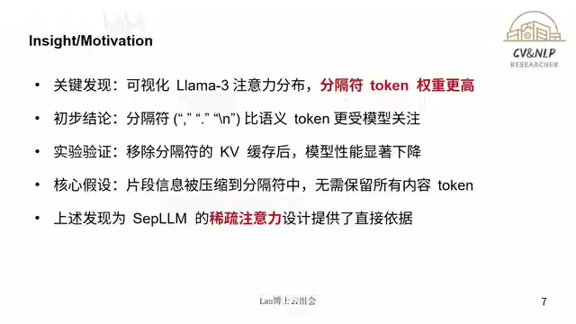
00:03:18–00:03:20 · 画面 048这就意味着分隔符可能承载了片段间的关键关联信息。基于这个观察，SepLLM 就提出了通过聚焦分隔符初始的 token 和相邻的 token 来剔除冗余的计算。就像在处理长文本的时候先筛选出必须关注的关键节点：分隔符、段落首尾的 token 等等，大幅减少无效的关联。为了让大家更直观的理解 Transformer 的自注意力的计算量的问题
00:03:20–00:03:25 · 画面 049
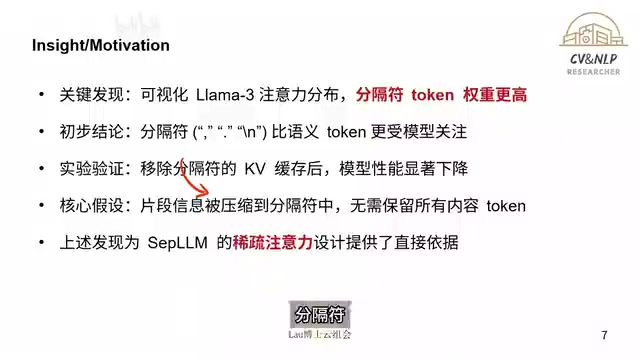
00:03:20–00:03:25 · 画面 04900:03:25–00:03:30 · 画面 050
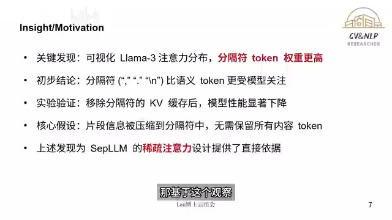
00:03:25–00:03:30 · 画面 05000:03:30–00:03:33 · 画面 051
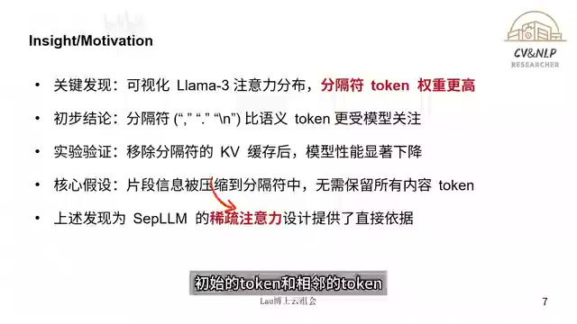
00:03:30–00:03:33 · 画面 05100:03:33–00:03:35 · 画面 052
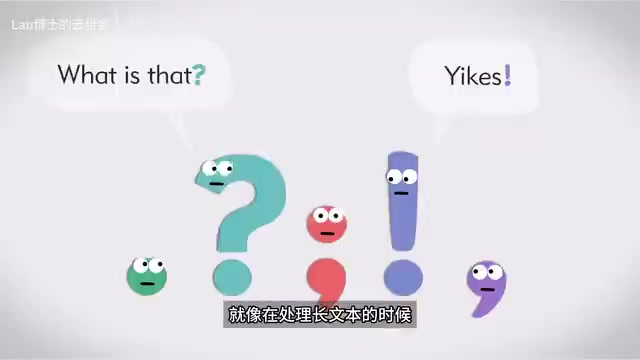
00:03:33–00:03:35 · 画面 05200:03:35–00:03:39 · 画面 053
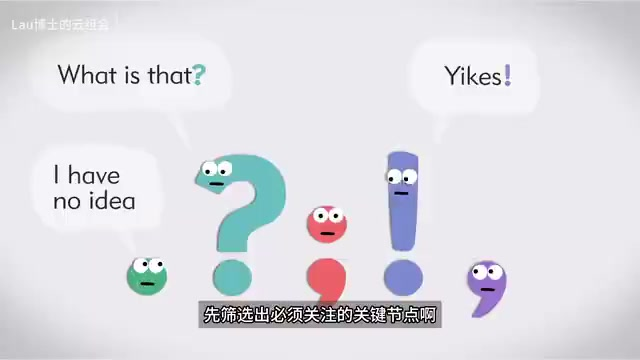
00:03:35–00:03:39 · 画面 05300:03:39–00:03:41 · 画面 054
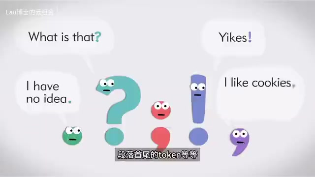
00:03:39–00:03:41 · 画面 05400:03:41–00:03:43 · 画面 055
00:03:41–00:03:43 · 画面 05500:03:43–00:03:44 · 画面 056
00:03:43–00:03:44 · 画面 05600:03:44–00:03:45 · 画面 057
00:03:44–00:03:45 · 画面 05700:03:45–00:03:46 · 画面 058
00:03:45–00:03:46 · 画面 05800:03:46–00:03:49 · 画面 059
00:03:46–00:03:49 · 画面 059我们用一个具体的例子和数字表来拆解。假设输入的句子是小明逗号借给小红句号，他 6 个 Token 包含了逗号和句号两个分割符。每个 Token 的 QK 的向量的维度为 3，这是出于简化计算。基于传统的 Transformer 具体的数字表如下
00:03:49–00:03:52 · 画面 060
00:03:49–00:03:52 · 画面 06000:03:52–00:03:56 · 画面 061
00:03:52–00:03:56 · 画面 06100:03:56–00:04:00 · 画面 062
00:03:56–00:04:00 · 画面 06200:04:00–00:04:09 · 画面 063
00:04:00–00:04:09 · 画面 06300:04:09–00:04:12 · 画面 064
00:04:09–00:04:12 · 画面 064这 6 个 Token 已经产生了 36 次的计算。如果扩展到 1000 个 Token，计算量会暴增到 100 万次，也就是 1000 乘以 1000。趁着打铁，我们直接看到图 3。图 3 的左侧描述了 SepLLM 训练的部分，右侧是推理的部分。而传统的 Transformer 的进行全局注意力的计算不同，训练的阶段 SepLLM 仅仅的计算 Initial 的 TokensSeparator 的 Token 以及
00:04:12–00:04:19 · 画面 065
00:04:12–00:04:19 · 画面 06500:04:19–00:04:20 · 画面 066
00:04:19–00:04:20 · 画面 06600:04:20–00:04:24 · 画面 067
00:04:20–00:04:24 · 画面 06700:04:24–00:04:26 · 画面 068
00:04:24–00:04:26 · 画面 06800:04:26–00:04:28 · 画面 069
00:04:26–00:04:28 · 画面 06900:04:28–00:04:33 · 画面 070
00:04:28–00:04:33 · 画面 07000:04:33–00:04:39 · 画面 071
00:04:33–00:04:39 · 画面 071labeling 的 token 的注意力。推理的阶段子计算对于生成 token 的 initial 的 tokenseparate 的 token 以及 labeling 的 token，也就是计算序列头分格符以及相邻的 token。这个动作极大的节省了计算资源
00:04:39–00:04:42 · 画面 072
00:04:39–00:04:42 · 画面 07200:04:42–00:04:46 · 画面 073
00:04:42–00:04:46 · 画面 07300:04:46–00:04:50 · 画面 074
00:04:46–00:04:50 · 画面 07400:04:50–00:04:56 · 画面 075
00:04:50–00:04:56 · 画面 075作者们又是怎么发现的呢？说到这里，再给不熟悉我们的同学介绍一下本频道六博士云组会的自律打造一站式人工智能交流平台，用尽可能好理解的语言让每位同学都能了解 AI 最前沿的内容。除了视频以外，也欢迎大家加入云组会的知识星球。我们做了三件事：第一，系统性的拆解了热门领域的学习路线，帮你的避开无效的努力第二
00:04:56–00:05:05 · 画面 076
00:04:56–00:05:05 · 画面 07600:05:05–00:05:06 · 画面 077
00:05:05–00:05:06 · 画面 07700:05:06–00:05:15 · 画面 078
00:05:06–00:05:15 · 画面 07800:05:15–00:05:16 · 画面 079
00:05:15–00:05:16 · 画面 07900:05:16–00:05:20 · 画面 080
00:05:16–00:05:20 · 画面 08000:05:20–00:05:23 · 画面 081
00:05:20–00:05:23 · 画面 081每日更新精选文献解读，省去百分之八十的检索时间。三、建立专家学者交流群，不定期掉落福利，直接与专家学者互动交流，深度参与选题云组会，欢迎各位同学的加入。在第一章当中，作者通过一个有趣的实验揭示了关键的现象，当他马上干巴逼 Answer 处理数学问题，Nata 在 4 月卖给了 48 个朋友家子，5 月卖出的数量是 4 月的一半
00:05:23–00:05:27 · 画面 082
00:05:23–00:05:27 · 画面 08200:05:27–00:05:31 · 画面 083
00:05:27–00:05:31 · 画面 08300:05:31–00:05:33 · 画面 084
00:05:31–00:05:33 · 画面 08400:05:33–00:05:34 · 画面 085
00:05:33–00:05:34 · 画面 08500:05:34–00:05:37 · 画面 086
00:05:34–00:05:37 · 画面 08600:05:37–00:05:44 · 画面 087
00:05:37–00:05:44 · 画面 08700:05:44–00:05:53 · 画面 088
00:05:44–00:05:53 · 画面 088总共卖了多少的时候模型的注意力
00:05:53–00:06:16 · 画面 089
00:05:53–00:06:16 · 画面 089并非是集中在 NATA48 或是加子的语义 token 上面而是大量的投向了逗号和句号我们可以看到由图二所示这就像我们写文章的时候标点不仅是分割句子还隐含着逻辑逗号分隔并列的信息句号标志着一个完整的技术步骤的结束
00:06:16–00:06:26 · 画面 090
00:06:16–00:06:26 · 画面 090作者还进一步做了对比实验如果从 KV 缓冲当中移除了这些分隔符模型解决数学问题的正确率会从 77%降到 68%
00:06:26–00:06:30 · 画面 091
00:06:26–00:06:30 · 画面 091我们可以从表 1 当中对比可以发现
00:06:30–00:07:33 · 画面 092
00:06:30–00:07:33 · 画面 092这就说明分隔符确实是承载了片段的关键信息想象一下你在记笔记的时候可能只会记下 4 月份冒号 48 5 月份冒号 24总计冒号 72那逗号分隔关键数据，无需逐一记录源具模型的行为是类似的，通过分隔符压缩片段信息，推理的时候只需要参考分隔符就可以还原关键内容，这个发现打破了语义 Token 更重要的直觉，为 SepLLM 仅保留分隔符关键 token 的设计提供了坚实的依据，所以对于致力于投入人工智能领域的同学，更多的时候应该是从问题出发，基于对问题的挖掘和分析去找解决方案，而不是自己突然想到一个天花乱坠的 idea。带着锤子去找钉子，往往有意义的研究只要抓住问题的本质，解决方案大多都是简洁而且是有效的。在第三章的 3.1 到 3.2 节，作者详细的介绍 SCP-1M 的基础设计
00:07:33–00:08:39 · 画面 093
00:07:33–00:08:39 · 画面 093核心是有所为有所不为，只让模型关注必要的 Token。具体来说，模型在计算注意力的时候，仅仅保留三类 Token：初始的 Token，也就是序列的开头 2 到 4 个 Token，比如像英文里面 MATALIA，然后后面跟了一个 SOLD，类似阅读时的这种开场白，对维持上下文的理解至关重要，也称为注意力的 SYNC分格服的 Token，所有的标点符号，比如像逗号、句号或是斜杠 M 作为了片段信息的压缩包，相邻的 Token，当前的 Token 附近的 M 的 Token，比如像前面五个捕捉语义，比如像 Half S-Menu 需要结合 40 包来理解。为了实现这一点，SCPLM 用二进制 M 码矩阵 M 来控制注意力的范围，当 M i j 等于 1 的时候，第 i 个 Token 就可以关注第 j 个 Token
也就是我们上述的三类，否则权重就为 0。这一点我们可以参考公式一，比如像在处理 ABC 逗号 DE 句号 FG 斜杠 N 的时候，我们可以看到图商的左边 Token F 仅仅关注初始的 Token AB 分隔符逗号句号以及斜杠 N 还有相邻的 Token EG 不需要关注 CD
00:08:39–00:09:37 · 画面 094
00:08:39–00:09:37 · 画面 094这就像看文章的时候只需要关注段落的开头、标点以及前后句跳过无关的细节更重要的是 SBLM 在训练包括预训练微调和推理当中使用相同的稀疏注意力机制避免传统的方法比如像 Streaming LM 或是 Snack KV 等等因为训练跟推理不一致导致性能下降同时作者还基于 FlexAttention 实现了高效的计算核，让稀疏的矩阵乘法更快，这就像给筛选关键信息的过程装了加速器
00:09:37–00:10:38 · 画面 095
00:09:37–00:10:38 · 画面 095总结来说，SVPAM 在训练阶段故意的将每个段落的信息压缩进分割该段落的分割符当中，比如像逗号、句号等等。因此在推理阶段只需要关注这些分割符就可以获得大量有用的信息来实现信息的压缩，提高效率。进一步来说，不同的分割符是不同段落的信息不同层次化的力度的总结，比如像逗号是最细腻度的句号是稍微出力度的-N 是出力度的即分隔符的本身它就具有自己的语义在第三章的 3.3 节作者针对流式场景比如像持续几个小时的客服对话长篇小说的生成优化了 scplm 这类场景当中文本会不断的增长分隔符的数量也会累积
如果全部保留 KV 缓存，还是会爆炸的，就像手机的相册不断的存照片，最终会占满内存。为此，SepLLM 设计了 4 类的缓存块，我们可以看到图示，初始缓存也就是容量 A 等于 4，固定保留开头的 4 个 Token，不随序列的增长变化，分隔符的缓存容量 S 等于 64，存储最重要的 64 个分隔符，类似关键的章节标题
00:10:38–00:12:12 · 画面 096
00:10:38–00:12:12 · 画面 096局部窗口的缓存容量 W 等于 256，当前 Token 附近 256 个 Token 捕捉了近期的信息，历史窗口的缓存当局部的窗口满了以后，新的 Token 就会暂存于此作为一个溢出去当准缓存达到了上限 C 的 800 的时候就触发压缩，将历史窗口当中的分隔符移到分隔符的缓存，如果流满的时候其他的 Token 直接丢弃，比如像图 4 里面迭代 1 达到上限以后，仅保留分隔符总缓存回到可控的范围这种设计无限长序列的平均缓存使用率始终是低于 C 的，这个就是经过一个公式的推导，这就像用滚动的相册的策略，新的照片进来的时候删掉老的非关键的照片，始终保存内存占用的稳定，同时采用滑动位置编码关注缓存类相对的位置而非原始绝对的位置，避免长序列当中位置数字过大导致模型 confusion
就像看书的时候，我们记得是第三章第二节相对的位置，而不是说是书的第几页，比如说 156 页的绝对位置那更容易的去定位内容。接下来来看实验的部分，原文当中做了大量的实验以及证明。在这里我们精选了部分的实验进行展示。在第四章的 4.2 节里面，作者首先测试了零成本
00:12:12–00:12:52 · 画面 097
00:12:12–00:12:52 · 画面 097应用 SepLLM 的效果不微调模型直接替换注意力机制看看性能是否下降测试用了两个经典的基准 GSM8 KCOT 要求模型分布的去解决数学问题由 MATA、LIA、Mai 甲子考验的是逻辑推理的能力 MMLU 的话涵盖了历史、科学等等的 57 个领域考验的是通用知识我们从表 1 就可以看见了
00:12:52–00:12:53 · 画面 098
00:12:52–00:12:53 · 画面 09800:12:53–00:14:13 · 画面 099
00:12:53–00:14:13 · 画面 099VAM 的模型就全注意力了在 GSM8K 的严格匹配也就是步骤和答案都要全对得分是 77.26mmlu 的总得分是 65.72 需要用 100%的 KV 缓存SepLLM 在 N 等于 256 也就是保留 256 个相邻的 Token 在 GSM8K 得到的分数是 77.18 几乎是一个持平的成绩 MMLU 得到的是 64.68 仅仅是降低了 1.04 但 KV 的缓存仅仅用了 47.36%这就意味着在你的笔记本上面运行大模型的时候原本需要 8G 的内存现在 4G 就够了还能对同样多的数学问题进行计算对比 String 的 LAM 不刻意的保留分隔符当 KV 的使用率相近于 47%的时候 GSM8K 的得分仅仅是 70.89 比 SEP-LAM 低了约 6%这就像两个学生记笔记一个记关键的标点
和要点也就是 SepLLM 一个的随便化重点Streaming-LM显着显然能够更好的还原内容
00:14:13–00:14:40 · 画面 100
00:14:13–00:14:40 · 画面 100在第四章的 4.3 到 4.8 节作者进一步的验证了 SepLLM 在训练场景的表现以及泛化能力从头训练的实验当中用 Pythia 160M 在 300B 的 Token Pyle 的数据集上面训练图 5 就显示SepLLM 的损失下降更快达到了相同的损失相比这个 VAM 模型也就是我们刚刚提到的这个 VAM 模型少用了 28%的计算量
00:14:40–00:15:12 · 画面 101
00:14:40–00:15:12 · 画面 101训练的时间减少了 26%那下游的任务比如像这个 ERC 的推理。这个 LAMBADA完成填空当中SCPLM M 等于 128 的性能接近甚至是超过这个 VAM 的这个模型。也就是在两个 2 当中。那例如这个 LAM 模型它的准确率 33.18那 VM 的模型是 33.28但 KV 的缓存就仅用了 32.27 个百分点那微调使用当中
00:15:12–00:15:13 · 画面 102
00:15:12–00:15:13 · 画面 102它是基于 Pythia 1.4B
00:15:13–00:15:33 · 画面 103
00:15:13–00:15:33 · 画面 103在图 6 中我们就可以看到。SepLLM 从预训练的 ChatPoint 继续训练。损失了快速的下降到 VM。说明它是很容易去适配到现有的模型当中。这就像给旧手机装了新系统。不需要去更换硬件就能够提速。作者还尝试了混合层的设计。
00:15:33–00:15:59 · 画面 104
00:15:33–00:15:59 · 画面 104让第一层和最后一层用全注意力。来捕捉全局的依赖。其他用 SCPLM结果性能进一步的去提升。像 LAN 的困惑度从 40.08 降到了 33.4 亿提醒我们关键层保留全局的视野。其他层高效计算是平衡性能和效率的好策略。
00:15:59–00:16:12 · 画面 105
00:15:59–00:16:12 · 画面 105泛化性方面SepLLM 在 Lama3-8B Fulcrum 40B 的模型上表现非常优异。我们可以看到表格 11 到表格 14。在 GSM 8K 上还超过了 HO
00:16:12–00:16:25 · 画面 106
00:16:12–00:16:25 · 画面 106Snap KV 等等的方法这个可以看到表格 15 上。这就说明它的这种设计是不依赖于特定的模型。是具有非常大的广泛的应用价值。在第 4 章 4.5 到 4.7 节
00:16:25–00:16:36 · 画面 107
00:16:25–00:16:36 · 画面 107作者就测试了 SepLLM在超长序列流式场景的表现。并通过相互实验验证了各个组件的必要性。
00:16:36–00:17:09 · 画面 108
00:16:36–00:17:09 · 画面 108在 PG-19 的数据集包含了长篇小说上。生成的 1N 到 4N 的 Token表示就显示了SepLLM 在 S 等于 64 的困惑度衡量生成的良惯性。始终低 streaming LM 4N 的 Token分别是 33.9 以及 36.1 困惑度低的时候生成的文本的连贯性越连贯这就意味着用 SepLLM 续写《战争与和平》这样的长篇小说能更好地保持情节的一致性在推理速度上生成 64K 的 token 的时候 SepLLM 的耗时是 1049.7 秒虚名 LM 快了 4.2%而且 KV 缓存的使用率更低是 562 对比 800 这一个我们可以从表 5 里面看到总结来看 SepLLM 贴合自然语言分布的原生稀疏注意力机制也是一种新的语言建模视角它简单朴素而且好用
00:17:09–00:17:25 · 画面 109
00:17:09–00:17:25 · 画面 10900:17:25–00:18:02 · 画面 110
00:17:25–00:18:02 · 画面 110作者认为其最适合取代 Swing LLM 等方法作为稀疏注意力机制最基础的 BASIC 方法，也就是后面的新方法可以跟 SCP LLM 这种原生的稀疏注意力进行比较，来更深入的优化稀疏注意力能更鲁棒性的超越原生的稀疏注意力的方法就是更好的非原生方法，这也是未来学者探索的方向，目前这个。
00:18:02–00:18:03 · 画面 111
00:18:02–00:18:03 · 画面 11100:18:03–00:18:14 · 画面 112
00:18:03–00:18:14 · 画面 112项目也在和 Hugging FaceTransformer 的 official team 在合作，那之后呢应该会合并到 Hugging Face 的仓库里面中去，那大家呢敬请期待，以上是本期视频的全部内容，欢迎关注六博士的云组会，成为人工智能领域的专家。
00:18:14–00:18:18 · 画面 113
00:18:14–00:18:18 · 画面 11300:18:18–00:18:20 · 画面 114
00:18:18–00:18:20 · 画面 11400:18:20–00:18:21 · 画面 115
00:18:20–00:18:21 · 画面 115转写与来源说明 · 12 个自动复核提示
保留 124 个原始语音片段，12 个片段触发自动复核提示。提示仅用于定位可能的术语、重复或识别问题，不等于已确认错误。
讲解画面为源视频截图（640×360），不是可编辑 PPT 文件。全片按每秒 2 帧扫描内容变化，逐步展开页保留；连续动画保留代表画面。清晰度受源视频限制。
原视频：paper/合集_2026-10-16_论文精读/ICML'25神作！分隔符优化狂减50%KV缓存：SepLLM【论文精读】.mp4
SHA-256：1c14c19d7b866c64a52361164c5c7dacb3da46312d75b472ba216c3413a706bd
作者还尝试了混合层的设计。
让第一层和最后一层用全注意力。
来捕捉全局的依赖。
其他用 SCPLM
结果性能进一步的去提升。
像 LAN 的困惑度
从 40.08 降到了 33.4 亿
提醒我们
关键层保留全局的视野。
其他层高效计算
是平衡性能和效率的好策略。
泛化性方面
全文按视频语音与画面制作。原论文可从上方链接下载；完整资料包保留全文、原始逐字稿、字幕和校对记录。